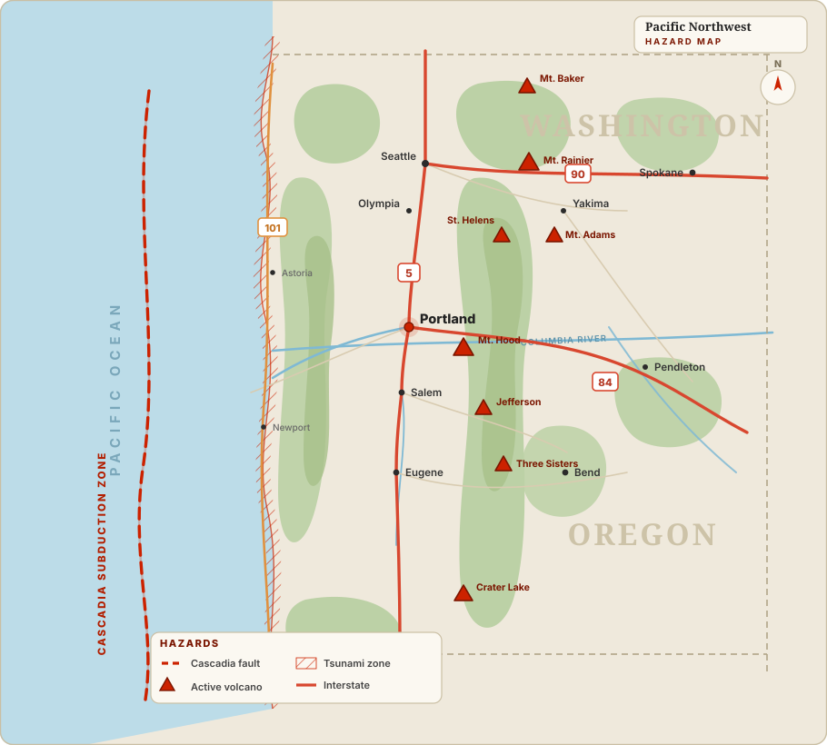
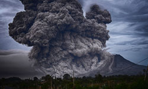
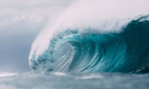
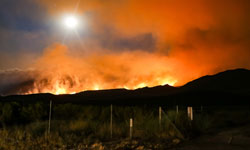

One region, five overlapping threats
Offshore runs the 700-mile Cascadia Subduction Zone. Inland rise the active Cascade volcanoes — Rainier, St. Helens, and Hood. Between them sit Seattle and Portland; along the coast lie the towns first in line for a tsunami.
Knowing where you sit on this map is the first step in knowing which threats to prepare for.

The Cascadia Subduction Zone
A 700-mile fault from Vancouver Island to Northern California, capable of a magnitude-9.0 rupture. The last was in 1700; scientists put the odds of another within 50 years at roughly one in three. Expect 3–5 minutes of violent shaking across the Portland metro.
Read the full Cascadia briefing →
Mount Hood & Mount Rainier
Both are active stratovolcanoes. Rainier's greatest danger isn't lava but lahars — fast-moving mudflows that could reach populated valleys in under an hour. Mount Hood looms 50 miles from downtown Portland and has erupted as recently as the 1790s.
Explore volcanic hazards →
Coastal Tsunami Inundation
After a Cascadia rupture, a tsunami could strike the Oregon coast in as little as 15 minutes — far too fast to wait for an official warning. If you're at the beach and the ground shakes hard, that is your warning: move to high ground immediately.
Know your inundation zone →
Extreme Heat Events
The June 2021 heat dome pushed Portland to an unprecedented 116°F and killed dozens across the region — most without air conditioning. As a climate-driven hazard, these events are becoming more frequent and more lethal in a region built for mild summers.
Prepare for extreme heat →
Wildfire & Smoke
The 2020 Labor Day fires burned over a million Oregon acres and blanketed Portland in the worst air quality on Earth for days. Even far from the flames, smoke is now an annual respiratory threat every late summer and fall.
Build a smoke-ready plan →